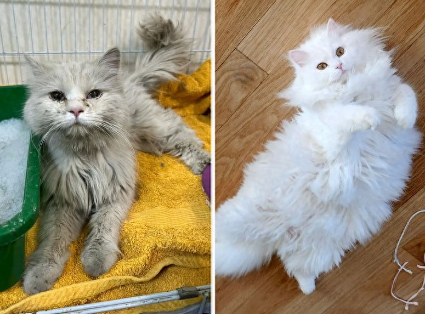
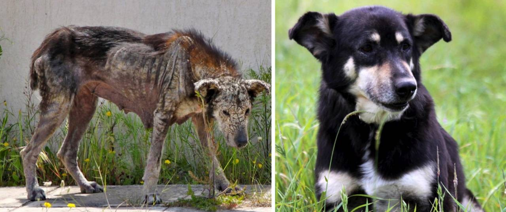
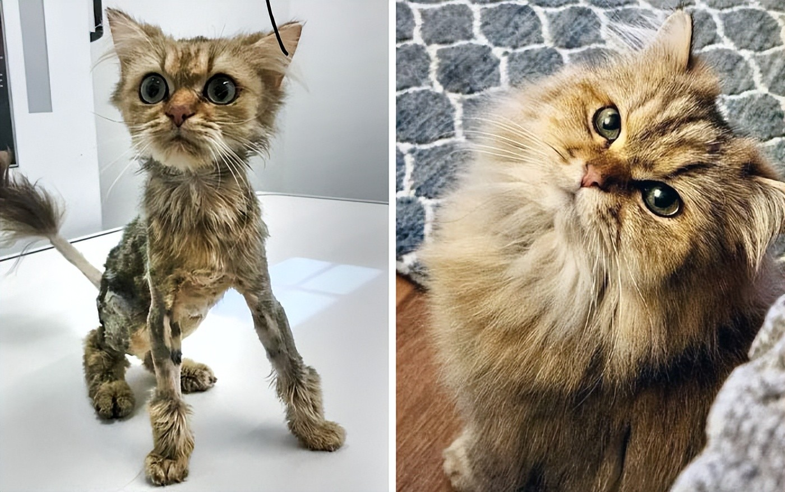
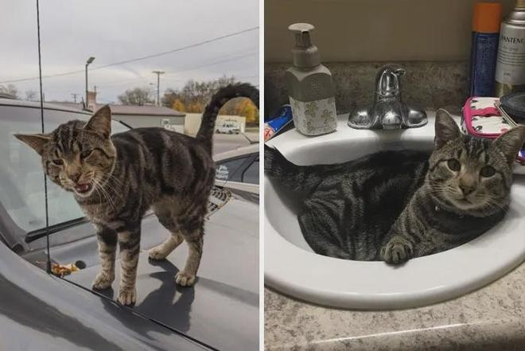

🐱 Whiskers' Story
✅ Rescued & Adopted
Whiskers' Journey
Whiskers was found abandoned in a carrier on a hot summer day, dirty and frightened, hiding at the back of a shelter cage. Thanks to funds from our 2025 Charity Gala Dinner, he received vaccinations, desexing and a proper grooming. After two months of foster care, this fluffy white cat found his forever home with a retired teacher who adores him.
🐶 Bella's Story
✅ Rescued & Recovering
Bella's Journey
Bella was found as a stray with severe skin disease, missing patches of fur and very underweight. Our community fundraiser covered her vet treatment, medicated baths and nutritious meals. Now her coat has grown back, her skin is healthy, and she enjoys running through the grass with her new family every single day.
🐈 Milo's Story
✅ Rescued & Thriving
Milo's Journey
Milo was only weeks old when he was found, tiny and skinny with a dull, patchy coat. Donations from our Paws Walk fundraiser paid for kitten milk formula, vet check-ups and a warm foster home. Look at him now — a round, fluffy, confident cat who rules the house and demands chin scratches on demand.
🐱 Oliver's Story
✅ Rescued & Rehomed
Oliver's Journey
Oliver was found roaming the streets, calling out for help on top of a parked car. Our rescue team brought him in, and the funds from our Silent Auction paid for his care. Today Oliver enjoys a quiet life at home — his favourite spot is the bathroom sink, where he waits patiently for the tap to drip.
Want to help more animals like these?
Join one of our upcoming events and make a real difference.